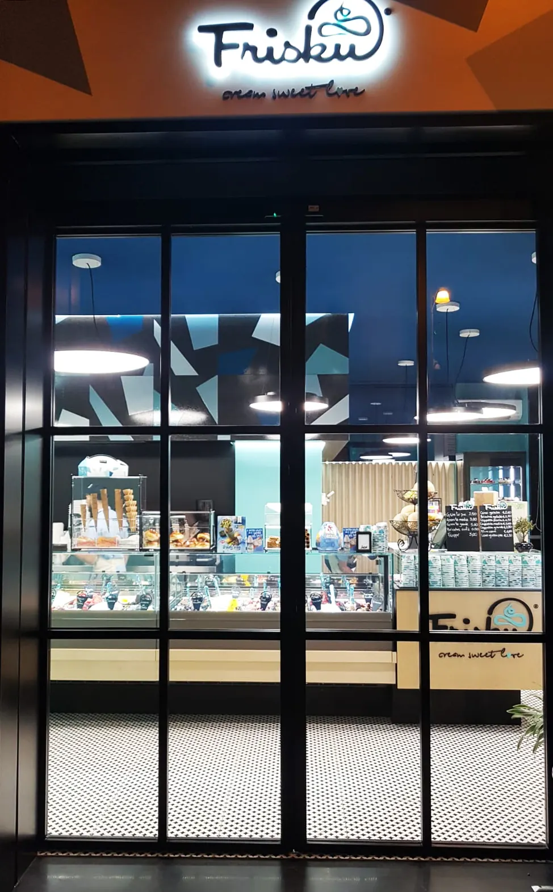

Il centro storico di Trapani e Marsala è pieno di piano terra accatastati come C/2 (Magazzini) che valgono oro se trasformati in C/1 (Negozi) o B&B. Ma è sempre possibile?
Molti investitori acquistano "bassi" pensando di farci una suite per turisti, per poi scoprire che il soffitto è troppo basso per la legge. Ecco i 3 requisiti fondamentali.
1. Le Altezze Minime
Per l'abitabilità (e quindi per affittare a turisti) servono generalmente 2,70 metri di altezza. Nei centri storici ci sono deroghe (spesso fino a 2,40m o 2,20m per i bagni), ma vanno verificate nel Regolamento Edilizio Comunale specifico.
2. I Rapporti Aeroilluminanti
La superficie delle finestre deve essere almeno 1/8 della superficie del pavimento. Se il locale è cieco o ha solo la porta d'ingresso, bisognerà installare sistemi di ventilazione meccanica forzata (VMC) se il regolamento locale lo permette per uso commerciale.

Un ex magazzino trasformato in attività commerciale di successo: la chiave è la vetrina e l'impiantistica.
3. Gli Oneri di Urbanizzazione
Cambiare uso costa. Bisogna pagare al Comune gli oneri perché si "aumenta il carico urbanistico" (più persone useranno fogne, parcheggi, ecc). Il costo varia, ma va calcolato nel Business Plan prima dell'acquisto.
Vuoi aprire un'attività?
Controlliamo se l'immobile ha i requisiti prima che tu firmi il contratto d'affitto o acquisto.
Verifica Agibilità